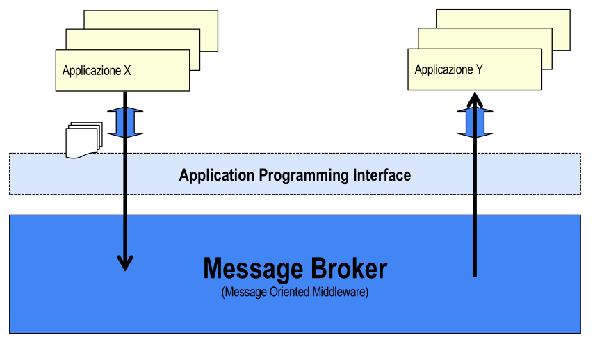
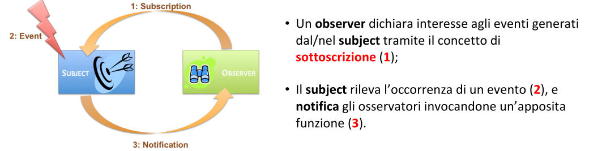
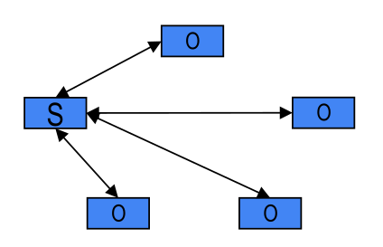
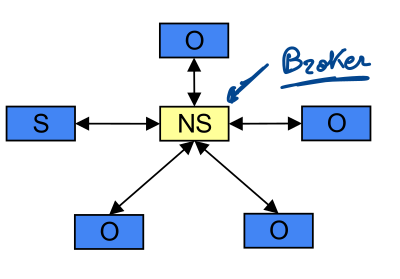
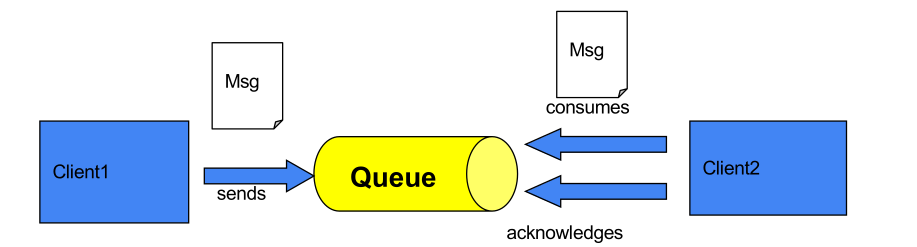
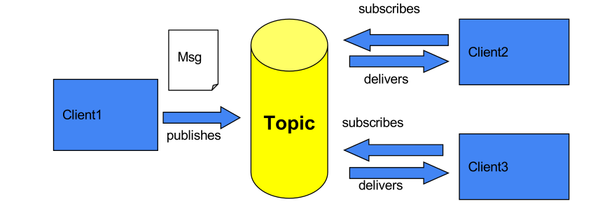

MOM
Con i Message-Oriented middleware affrontiamo un cambio di paradigma rispetto ai Remote-Call middleware.
Infatti queste tecnologie RPC condividono una caratteristica fondamentale: la comunicazione è diretta e tipicamente sincrona (Non sarebbe la norma utilizzarli per chiamate asincrone). Il client chiama il server, attende, riceve una risposta.
Sender e Receiver devono essere entrambi attivi nello stesso istante, devono conoscersi, e il client si blocca finché il server non risponde.
I Message-Oriented middleware (MOM) rappresentano l’approccio opposto: la comunicazione è indiretta (passa attraverso un intermediario chaimato broker), asincrona (il sender non aspetta che il receiver sia pronto) e disaccoppiata (sender e receiver non si conoscono direttamente e possono avere cicli di vita indipendenti).
Motivazioni dietro i Message-Oriented middleware
Sono di solito utilizzati per rimpiazzare quelli basati sul paradigma RPC. Quindi la giustificazione è di natura architetturale.
-
Una chiamata RPC è per natura sincrona e bloccante → possiamo avere problemi di scalabilità
Le richieste RPC arretrate rallentano l’intero sistema
-
Inoltre se il server non è raggiungibile nell’esatto momento in cui si esegue una chiamata a procedura remota, la richiesta semplicemente fallisce.
Quindi la soluzione sarebbe quella di utilizzare un meccanismo asincrono per incrementare la scalabilità dell’architettura.
Il client deposita il messaggio in un buffer e prosegue il suo lavoro, senza attendere che il destinatario lo riceva o lo elabori.
Inoltre questo paradigma ci permette di sviluppare sistemi con high availability e scalability.
Availability: la proprietà di un sistema di essere operativo e in grado di rispondere alle richieste in un dato istante. Si misura tipicamente come percentuale di uptime. Un sistema high-availability è progettato per minimizzare il tempo di indisponibilità anche in presenza di guasti, tipicamente tramite ridondanza e failover automatico.
Scalability: la capacità di un sistema di gestire un carico crescente aumentando proporzionalmente le risorse, senza degradare le prestazioni.
In un sistema di grandi dimensioni, prima o poi un server fallirà - è una certezza statistica, non una possibilità. Se l’architettura è basata su RPC diretti, il fallimento di un server porta al fallimento di tutte le comunicazioni che lo coinvolgono.
Con un broker in mezzo, invece, è possibile migrare la gestione delle code da un server all’altro in modo trasparente per le applicazioni. Il broker stesso potrebbe essere replicato, ridondante.
I MOM, inoltre, contribuiscono ad altre due proprietà di qualità del software: resilienza e affidabilità:
- resilienza: è la proprietà di un sistema di continuare a funzionare in presenza di sovraccarichi, guasti parziali o condizioni avverse. Un sistema resiliente si degrada con grazia invece di crollare.
- affidabilità (reliability): è la probabilità che il sistema funzioni correttamente per un determinato periodo di tempo senza fallimenti. È una proprietà più “statica” - riguarda la stabilità nel tempo.
Quindi con i MOM abbiamo più resilienza grazie al disaccoppiamento (un componente che cade non trascina con sé gli altri), più affidabilità grazie alla persistenza dei messaggi (un messaggio rimane nella coda finché non viene consegnato al destinatario).
Comunicazione indiretta
la comunicazione indiretta è la comunicazione tra entità di un sistema distribuito che avviene tramite un intermediario.
- Sender e Receiver non sono accoppiati direttamente - mando un messaggio e tecnicamente non so a chi, ovvero il client non ha la necessità di conoscere la locazione del destinatario.
La “natura” dell’intermediario dipende dal modello di comunicazione indiretta adottato.
-
group communication: introduce un’astrazione di gruppo. Quando un’applicazione invia un messaggio, lo invia al gruppo, e l’infrastruttura si occupa di recapitarlo a tutti i membri.
-
shared memory: la shared memory distribuita è un approccio più radicale, i processi comunicano leggendo e scrivendo su una memoria condivisa logica, anche se fisicamente distribuita su più macchine.
Il tuple-space è una versione particolare: i processi inseriscono e prelevano tuple (record) da uno spazio condiviso.
-
code di messaggi: realizzano l’astrazione di coda e sono un meccanismo point-to-point. Il sender inserisce un messaggio in una coda, e un solo receiver lo preleva. Anche se più consumatori sono in ascolto sulla stessa coda, ciascun messaggio viene consegnato a uno solo di essi.
-
pubblisher-subscribe: realizza un meccanismo uno-a-molti. Il publisher genera messaggi associandoli a un argomento (topic), e tutti i subscribe che hanno espresso interesse per quel topic ricevono una copia del messaggio.
Gli utlimi due approcci sono quelli che vengono implementate dai MOM.
MOM
Quando si parla di message-oriented middleware, ci si riferisce a soluzioni basate su code o publish-subscribe.
I sistemi basati su publisher-subscribe sono anche noti come distributed event based system.
Il MOM gioca il ruolo di intermediario - il message broker - nella comunicazione indiretta basata su messaggi.
Le sue responsabilità chiave sono:
- garantire lo scambio di messaggi tra applicazioni con tecniche di store-and-forward, questo è il meccanismo tecnico che abilità l’asincronia.
- sollevare il programmatore dai dettagli di basso livello, esponendo API di alto livello basata su poche primitive
send/receive message.

Le due applicazioni X e Y non si parlano direttamente. Entrambe parlano con il Message Broker, che si trova in mezzo. L’unica interfaccia che le applicazioni vedono è l’API esposta dal broker.
Aspetti chiave MOM
-
Il broker recapita messaggi tra macchine diverse: il sender e il receiver tipicamente non sono sullo stesso host. Il broker si occupa di tutto il trasporto di rete.
-
Il broker gestisce le interruzioni di rete: se nel momento dell’invio la rete non è raggiungibile, il messaggio può essere conservato localmente e inoltrato successivamente quando la connettività torna disponibile.
-
Il broker gestisce le interruzioni del receiver: se il destinatario non è in esecuzione quando il sender invia un messaggio, il broker lo conserva finché il receiver non torna online. Il sender non si blocca in attesa: inva e prosegue.
È la definizione operativa di comunicazione asincrona.
Proprità di disaccoppiamento
I message-oriented middleware (MOM) forniscono un meccanismo per l’integrazione flessibile e disaccoppiata di applicazioni distribuite.
-
Disaccoppiamento spaziale: il sender non conosce - o non ha bisogno di conoscere - l’identità del receiver e viceversa.
I partecipanti possono essere sostituiti, migrati, aggiornati, etc.
-
Disaccoppiamento temporale: il sender e il receiver possono avere cicli di vita differenti:
Il sender e il receiver non devono essere necessariamente in esecuzione allo stesso tempo per poter comunicare.
Evento e notifica
La comunicazione indiretta è fortemente utilizzata per la propagazione (dissemination) di eventenei sistemi distribuiti.
- Evento: condizione rilevata da/in una applicazione e comunicata all’intermediario sotto forma di messaggio.
- Notifica: l’atto di informare un insieme di applicazioni dell’occorrenza dell’evento.
L’approccio evento-notifica richiama il pettern Observer:

ROS
ROS - Rose Operating System - è un esempio di event-based system, ovvero di middleware basato sull’approccio di evento-notifica.
ROS non è un sistema operativo in senso stretto, ma un middleware per robotica che usa massicciamente il modello pub-sub; i sensori pubblicano dati su topic, i nodi di elaborazione si sottoscrivono ai topic di interesse e producono nuovi topic di output.
L’intero stack di un robot autonomo si basa su questo paradigma.
Ruolo dell’Observer
L’Observer riduce l’accoppiamento soggetto-osservatore (in parte perché vediamo che sono comunque presenti degli inconvenienti), e supporta la comunicazione uno-a-molti.

Tale approccio presenta alcuni inconvenienti:
- il subject deve mantenere una **lista di ** observer e relative sottoscrizioni
- il subjcet è responsabile di notificare gli observer all’occorrenza di un evento di interesse (scarsa scalabilità)
- gli observer devono conoscere il subject
Per risolvere tali inconvenienti, la responsabilità di gestire gli osservatori/sottoscrizioni e di notificarli non è localizzata nei soggetti, ma delegato ad una terza entità detta NotificationService (NS).

Ovvero il NS sarà il broker.
Il publish-subscribe non è l’unico modo di costruire un sistema event-based.
Anche le code di messaggi possono essere utilizzate come notification service: il sender deposita un messaggio in una coda, e i receiver sottoscritti alla cosa lo prelevano. La differenza sta nella semantica di consegna: 1-a-1, 1-a-molti.
Domini di messaging: PTP e Pub-Sub
Nei MOM esistono due domini di messaging principali, che corrispondono ai due modelli di comunicazione indiretta che abbiamo introdotto.
Point-to-Point
Il dominio PTP ruota intorno al concetto di coda di messaggi.
La regola fondamentale è semplice: ogni messaggio ha un solo consumer.

Una coda conserva il messaggio finché non si verifica una di due condizioni: il messaggio scade (se è stato configurato con un TTL) oppure viene consumato.
Quando un client si connette alla coda, preleva il messaggio e successivamente invia un acknowledgement (ack) alla coda per confermare la corretta ricezine: è il segnale che dice al broker “puoi rimuovere definitivamente questo messaggio, è stato consegnato”.
Publish-Subscribe
Nel dominio publish-subscribe, ogni messaggio è associato ad un topic.
La regola fondamentale è opposta a quella del PTP: ogni messaggio può avere più consumer.

I topic conservano un messaggio finché esso non viene rilasciato ai subscriber correnti. Se un subscribe si connette dopo la pubblicazione, non riceve i messaggi precedenti. Questo comportamento può esser modificato, ma è di default.
I messaggi possono essere processati da 0…N subscriber.
Il fatto che ci sia 0 è un dettaglio da non trascurare: se nessuno è sottoscritto al topic nel momento della pubblicazione, il messaggio viene semplicemente perso.
Il publisher non riceve alcun errore, la sua responsabilità è solo quella di pubblicare.
Messaging Protocols
Esistono diversi protocolli che i broker MOM usano per scambiare i messaggi con i client. Quindi dal broker che si sceglie dipende l’interoperabilità di applicazioni distribuite aventi componenti implementate con diversi linguaggi di programmazione.
-
AMQP (Advanced Message Queuing Protocol)
È nato con l’obiettivo di sostituire i middleware propritari di messaggistica esistenti, fornendo uno standard aperto.
È un protocollo binario a livello wire - cioè definisce essattamente com i bit viaggiano sul filo - progettato per garantire interoperabilità tra fornitori diversi.
Ancora molto popolare.
-
MQTT (Message Queuing Telemetry Transport)
È un protocollo publish-subscribe leggero, standardizzato ISO (ISO/IEC PRF 20922), che usa TPC/IP come trasporto.
È stato progettato specificatamente per scenari con risorse limitate: basso consumo energetico, banda ridotta.
È quindi lo standard de facto per IoT, for/edge computing.
-
STOMP (Simple [Streaming] Text Oriented Message Protocol)
È un protocollo basato su testo (a differenza dei due precedenti, che sono binari), progettato per lavorare con MOM.
Fornisce un formato wire-level che permette ai client STOMP di parlare con qualsiasi broker compatibile, garantendo interoperabilità tra linguaggi, piattaforme e broker.
Il fatto di essere testuale lo rende molto più semplice da debuggare ma meno efficiente in termini di banda.